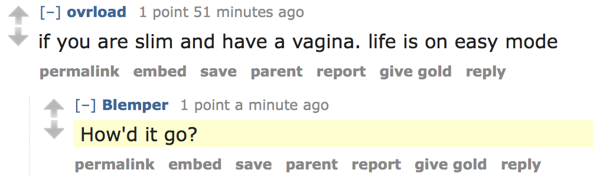

My favorite type of "just for fun" programming is to make bots. Specifically, bots to mess with other people. Previously I've made Tinder bots, Reddit bots, and Twitter bots. (I also have a few tutorials up if you're interested in making one yourself!) It's been a while since I've made any, so I decided to troll around a few subreddits I don't particularly like. I wanted to see what would happen if I trained a Markov dictionary based on previous comments from one of those subreddits, and then released the bot into the subreddit to reply to other users.
A Markov chain in this sense means that to construct a sentence, we look at what's statistically likely to be the next word. For example, in a subreddit about cats, where people mostly talk about cats, if we started a sentence with "The", and the most likely word to come after "The" (based on previous comments we have fed the bot) is "cat", then the next word in the sentence will be "cat." Then we find the word most likely to come after "cat", and so on, until we have a sentence. Usually these sentences aren't super coherent, but they sound like something that could be coherent to the right person. I have screenshots below so you'll see what I mean. For each bot, first I gave it hundreds of thousands of comments to feed into its dictionary (or, the data that stores the probabilities for these words), and then made it construct its sentences based on these probabilities to reply to other comments. So basically, the bot is replying to users in the subreddits, using their own words.
/r/the_donald
/r/the_donald is the main pro-Donald Trump subreddit. After consuming hundreds of comments, this bot mostly talked a lot about Islam and Muslims (who's surprised?). What was more surprising, was actually seeing what people comment about in /r/the_donald. It wasn't uncommon for people to suggest Muslims and various women should be hanged. Even though most of what the bot posted was gibberish, it still got upvotes. This was the most interesting subreddit my bot posted in, because other users would actually reply to the bot's comments, acting like it said something coherent. Also, so many of my comments would get immediately removed by the mods. Unfortunately, I didn't get screenshots of what the bot was replying to fast enough before my comments got deleted. But I am interested in revisiting this subreddit with bots again sometime.

At the end of day 2, we were banned for 30 days after making a comment against non-Muslim people. We had positive 25 comment karma.
/r/incels
Next I decided to erase the bot's dictionary (starting from scratch), and make it learn from /r/incels, a subreddit for men who cannot find girlfriends. (Incel means involuntarily celibate.) This doesn't sound so bad, but they often advocate for legal rape, lowering the age of consent, and wanting to kill men who can easily find girlfriends. The bot actually got quite a few comment replies here, even though the comments still didn't make much sense. The bot liked to talk about other men, sexual topics, and for some reason, being black. Eventually the bot got banned (but only for 3 days). We had positive 39 comment karma.

/r/theredpill
/r/theredpill is a subreddit for pickup artists, however, as a whole they are very disrespectful towards women.
I ran this bot for a long time and eventually gave up on being banned. I got downvoted a lot, ending up with only 19 comment karma. My API calls to Reddit kept getting rate limited, and I think it was because I didn't have as much comment karma. A lot of the replies were also mean to me, unlike the previous two subreddits.
Questions? Comments? Don't hesitate to contact me!